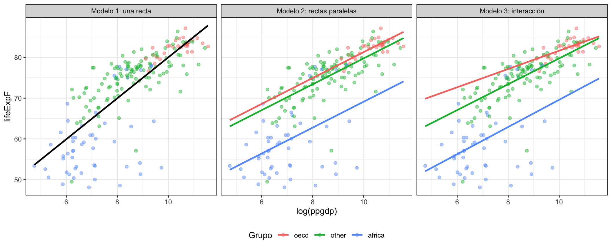
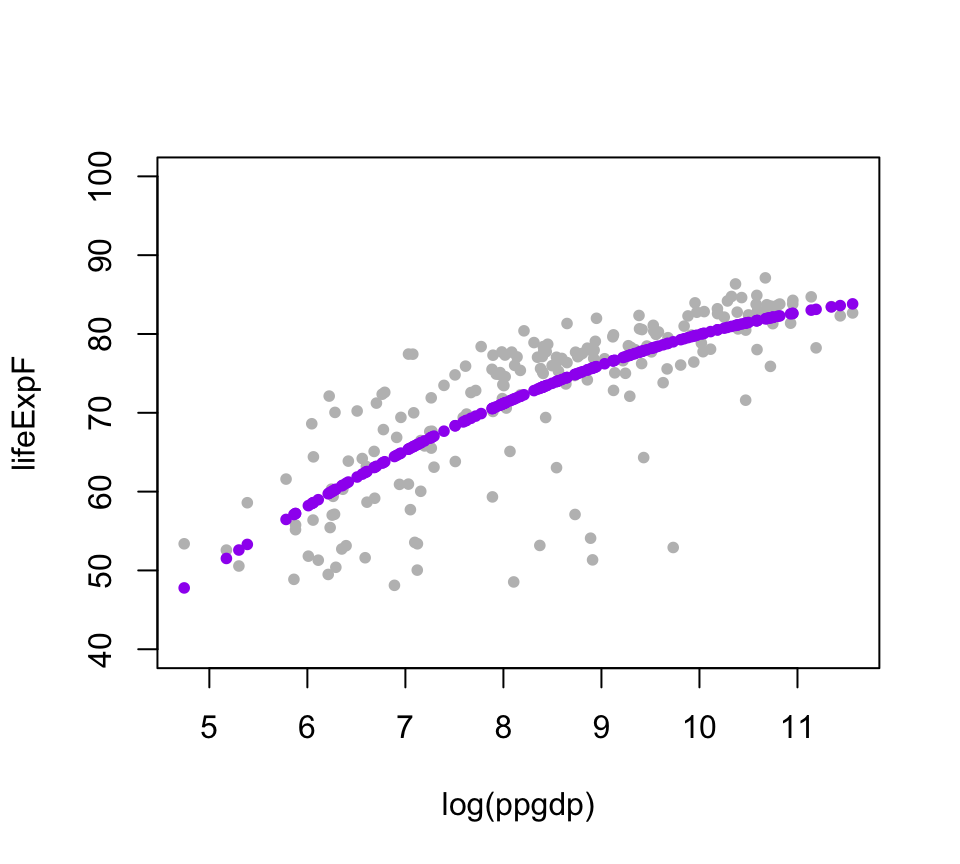
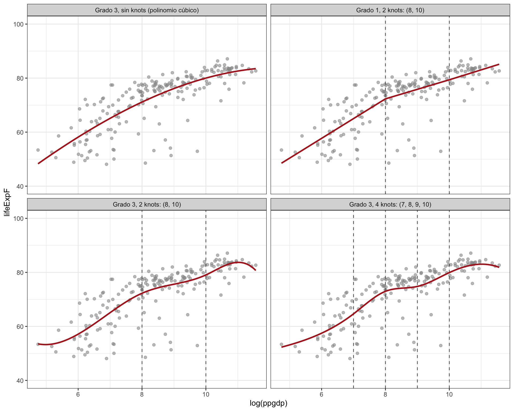
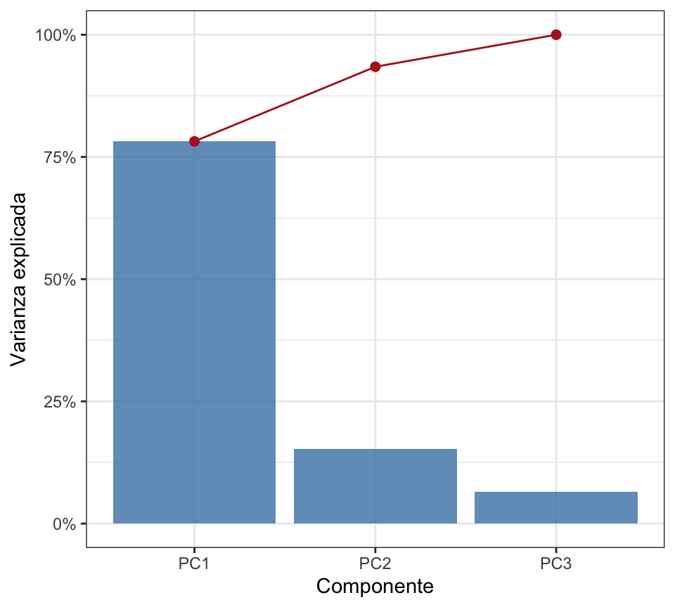
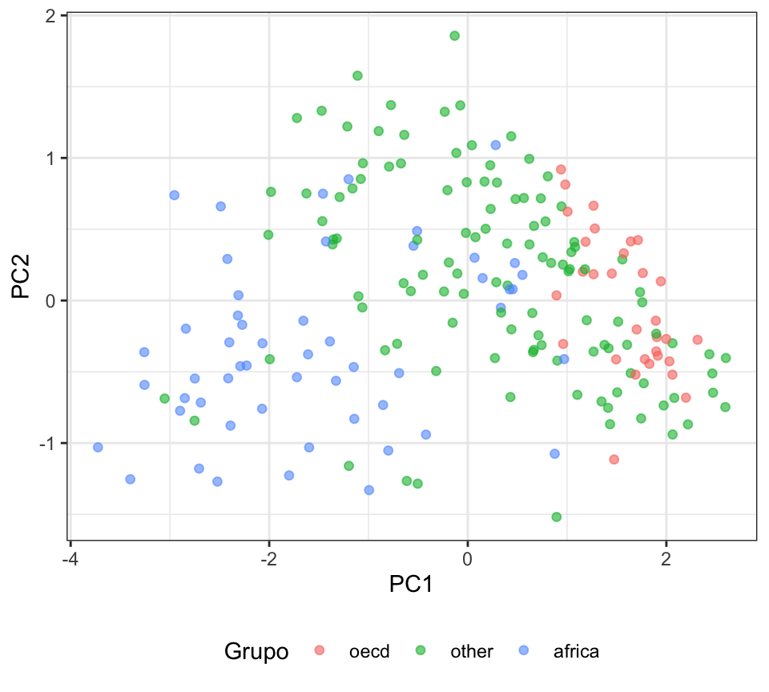

algo de contexto
Partamos de la base de que sabemos que una recta en el plano cartesiano tiene la forma: y = mx + b Donde m es la pendiente y b es la intersección con el eje y.
En esta clase vamos a trabajar con un ejemplo de Weisberg, en donde se plantea el siguiente modelo: Y_i = \beta_0 + \beta_1 x_i + \epsilon_i
Donde:
- Y_i es la esperanza de vida femenina del pais i.
- x_i es \log(\text{PIB per cápita}) del país i.
- \beta_0 es la intercepto.
- \beta_1 es la pendiente.
- \epsilon_i es el error aleatorio [parte del modelo que no logra explicar a Y_i].
De esto podemos preguntarnos dos cosas:
- ¿la relación entre PIB y esperanza de vida es la misma para todos los grupos de países?
- ¿La relación tiene que ser una recta o podría ser una curva?
nota: el dataset clasifica a los países en 3 grupos: aquellos que pertenecen a la OCDE, otros, y aquellos que pertenecen a África.
Notemos que si queremos evaluar el modelo para un grupo especifico, no podemos evaluarlo para otro, es decir, considere las siguientes representaciones:
- U_1= 1 sí el país pertenece a la OCDE, 0 en caso contrario.
- U_2= 1 sí el país pertenece a África, 0 en caso contrario.
- U_3= 1 sí el país pertenece a otros, 0 en caso contrario.
Esto implica que U_1 + U_2 + U_3 = 1 para cualquier fila. Meter esto dentro del modelo puede ser enredado, así que en primer lugar, fijemos los datos en alguno de los grupos y hacemos una regresión sobre este asi: \begin{align} \mathbb{E}(Y| x, oecd) = \gamma_{0,oecd} + \gamma_{1,oecd}x \\ \mathbb{E}(Y| x, africa) = \gamma_{0,africa} + \gamma_{1,africa}x \\ \mathbb{E}(Y| x, otros) = \gamma_{0,otros} + \gamma_{1,otros}x \end{align}
Es decir, estas expresión representan la esperanza condicional : el valor medio de la respuesta que esperamos para un pais con ese valor x para ese grupo. Notemos que cada grupo tiene su propio intercepto y pendiente [designado con el subíndice]. Veamos entonces que para trabajar con estos tres grupos tenemos en total 3 interceptos y 3 pendientes, es decir, 6 parámetros a estimar.
De manera más compacta y llamando j al grupo, podemos escribir: \mathbb{E}(Y| x, j) = \gamma_{0,j} + \gamma_{1,j}x
Ahora, notemos que para describir la pertenencia a un grupo, basta solo con usar dos de las variables indicadoras, ya que la tercera se deduce de las otras dos, así:
| Grupo | U_2 | U_3 |
|---|---|---|
| OCDE | 0 | 0 |
| África | 1 | 0 |
| Otros | 0 | 1 |
Considerando estos antecedentes, es que podemos escribir lo siguiente: \mathbb{E}(Y| x,\text{grupo}) = \beta_0 + \beta_{02}U_2 + \beta_{03}U_3 + \beta_1x + \beta_{12}U_2x + \beta_{13}U_3x
Lo bonito es que nos permite escribir una ecuación en lugar de 3. Veamos que si U_2 = U_3 = 0 (es decir, el país pertenece a la OCDE), entonces la ecuación se reduce a: \mathbb{E}(Y| x, \text{OCDE}) = \beta_0 + \beta_1x
Y analogamente para los otros casos, las expresiones correspondientes se anulan cuando uno de los U_j = 0. Notemos además que \beta_1 es la pendiente base sobre la cual trabajamos. Si se llega activar U_2 o U_3, entonces la pendiente se modifica con \beta_{12} o \beta_{13} respectivamente. Vale la pena notar, que podemos plantear la siguiente regresión: \mathbb{E}(Y|x, \text{grupo}) = \beta_0 + \beta_{02}U_2 + \beta_{03}U_3 + \beta_1x
Es decir, los grupos pueden tener niveles diferentes de esperanza de vida, pero la esperanza de vida cambia a la misma tasa respecto de (x).
En particular, podemos pensar en tres estrategias/formas de presentar esta regresión:
| Modelo | intercepto | pendiente |
|---|---|---|
| Y ~ x | \beta_0 | \beta_1 |
| Y ~ x + \text{grupo} | \beta_0 + \beta_{02}U_2 + \beta_{03}U_3 | \beta_1 |
| Y ~ x *\text{grupo} | \beta_0 + \beta_{02}U_2 + \beta_{03}U_3 | \beta_1 + \beta_{12}U_2 + \beta_{13}U_3 |
Ahora, ¿cómo elegimos cual es el mejor modelo? Tenemos los estadisticos, en particular vea que haciendo un test-anova tenemos:
anova(modelo_2, modelo_3)Analysis of Variance Table
Model 1: lifeExpF ~ log(ppgdp) + group
Model 2: lifeExpF ~ log(ppgdp) * group
Res.Df RSS Df Sum of Sq F Pr(>F)
1 195 5090.4
2 193 5077.7 2 12.675 0.2409 0.7862Es decir tenemos un F-test = 0.24 y un p-value \approx 0.79. Esto nos indica que no hay evidencia suficiente para rechazar la hipótesis nula de que los modelos son iguales, es decir, que el modelo con interacción no es mejor que el modelo sin interacción.
Note
Recordemos ANOVA, en este caso, está comparando dos modelos anidados M_2 \subset M_3. Notar que : \begin{align} M_2 :& \mathbb{E}(Y|x, \text{grupo}) = \beta_0 + \beta_{02}U_2 + \beta_{03}U_3 + \beta_1x + \varepsilon \\ M_3 :& \mathbb{E}(Y|x, \text{grupo}) = \beta_0 + \beta_{02}U_2 + \beta_{03}U_3 + \beta_1x + \beta_{12}U_2x + \beta_{13}U_3x + \varepsilon \end{align} Y lo que nos interesaria saber es que si los términos del modelo M_3 que no están en M_2 son significativos, es decir, si \beta_{12} = \beta_{13} = 0. Osea se plantea la siguiente hipótesis nula: H_0: \beta_{12} = \beta_{13} = 0 \qquad H_1: \text{al menos uno de los dos es distinto de 0}
Como vimos, nuestro p=0.79 es mayor que cualquier nivel de significancia usual, por lo que no hay evidencia suficiente para rechazar la hipótesis nula. De ahí que podemos concluir que el modelo con una pendiente única es suficiente para describir la relación entre PIB y esperanza de vida.
Regresión polinomial
Hasta ahora hemos trabajado con modelos lineales, es decir, aquellos presetan la relación entre Y y X como una recta. En realidad, esto no siempre es cierto, y esta aproximación puede quedarse corta para modelar algo que no puede representarse de esta manera. De ahí nace la nacesidad de extender esta relación a una polinomial. El primer paso que podriamos dar es agregar un término cuadrático, es decir, un modelo de la forma: Y = \beta_0 + \beta_1 X + \beta_2 X^2 + \varepsilon
Notemos que la relación cuadratica no viene de la nada, sino que se construye a partir de la relación lineal [esto implica que se relacionan entre sí]. Lo que nos permite el término cuadráctico es darle una forma curva a nuestra relación. En particular, si \beta_2 > 0 (\cup) la relación es convexa, y si \beta_2 < 0 la relación es cóncava (\cap).
Volvamos a los datos de Weisberg, y veamos que pasa si agregamos un término cuadrático a nuestro modelo.

summary(modelo4)
NoteVer output
Call:
lm(formula = lifeExpF ~ I(log(ppgdp)) + I(log(ppgdp)^2), data = UN11)
Residuals:
Min 1Q Median 3Q Max
-26.096 -1.814 1.276 3.284 12.318
Coefficients:
Estimate Std. Error t value Pr(>|t|)
(Intercept) -6.4614 12.3524 -0.523 0.60150
I(log(ppgdp)) 13.9592 2.9961 4.659 5.85e-06 ***
I(log(ppgdp)^2) -0.5320 0.1774 -2.998 0.00307 **
---
Signif. codes: 0 '***' 0.001 '**' 0.01 '*' 0.05 '.' 0.1 ' ' 1
Residual standard error: 6.321 on 196 degrees of freedom
Multiple R-squared: 0.6141, Adjusted R-squared: 0.6101
F-statistic: 155.9 on 2 and 196 DF, p-value: < 2.2e-16Splines
Un polinomio global tiene un problema: cada coeficiente afecta a toda la curva, así que lo que pasa en un extremo de los datos termina influyendo en el otro. Los splines resuelven esto partiendo el eje x en tramos, separados por puntos llamados knots (nodos), y ajustando un polinomio de grado d en cada tramo. Los polinomios se pegan de forma suave en cada knot: son continuos y tienen derivadas continuas hasta el orden d-1.
En R esto se hace con bs() del paquete splines, donde controlamos dos cosas:
degree: el grado del polinomio en cada tramo (d = 1 da rectas por tramos, d = 3 da splines cúbicos).knots: dónde se corta el eje x.
Veamos cómo cambia el ajuste al mover estos dos parámetros:

Algunas observaciones:
- Sin knots el spline cúbico es simplemente un polinomio de grado 3 sobre todo el rango: una sola curva global.
- Grado 1 con 2 knots da tres rectas unidas en x = 8 y x = 10. La curva es continua, pero tiene “codos” en los knots porque la pendiente cambia de golpe.
- Grado 3 con 2 knots mantiene la flexibilidad por tramos, pero la unión es suave: no se ven los cortes.
- Grado 3 con 4 knots es aún más flexible. Más knots significa más parámetros (el modelo usa d + K columnas más el intercepto, con K el número de knots), lo que permite seguir mejor los datos, pero también aumenta el riesgo de sobreajuste.
En general, podemos aramr un spline cúbico como : f(x) = \underbrace{\beta_0 + \beta_1 x + \beta_2x^2 + \beta_3x^3}_{\text{polinomio grado 3}}+ \sum_{j=1}^k \gamma_j(x - \xi_j)^3_+
Notemos que la primera parte la concemos, es la segunda la que nos podria causar confusión.
- k : número de knots/nodos.
- \xi_j : ubicación del knot j.
- (x - \xi_j)^3_+ : es una función que vale 0 si x < \xi_j y (x - \xi_j)^3 si x \geq \xi_j. Esto asegura que el efecto de cada knot solo se aplique a la derecha de su ubicación, y no afecte a los valores de x menores que el knot.
- \gamma_j : coeficiente que determina la magnitud del efecto del knot j.
smooth splines
en este escenario, además de los splines, buscamos que la función sea suave. Esto es: una curva podría pasar muy cerca de todos los puntos observados, pero seguir demasiado de cerca cada fluctuación puede significar que está capturando ruido en lugar de un patrón general.
La diferencia entre splines cúbicos y splines suavizados es, principalmente, cómo se controla esa flexibilidad: en el primer caso se especifican nudos; en el segundo se controla la suavidad global de la curva [generalmente con el parámetro \lambda].
PCA
Este es un escenario distinto al que veníamos trabajando. Consideremos que ahora, nuestro problema no es cómo ajustar los regresores que tenemos a una variable respuesta, pero elegir cuales regresores utilizar. Esto implica que tenemos demasiados y no sabemos cuales son verdaderamente relevantes. Considere que tenemos X_1, X_2, \ldots, X_p
Si muchos, que es lo más probable, de estos predictores están relacionados entre sí, tenemos el problema de la multicolinealidad. Cuando esto ocurre, resulta más difícil entender y separar los efectos individuales de cada predictor. Lo que implica menor precisión en la estimación de los coeficientes de regresión y eventualmente interpretaciones engañosas.
De ahí nace la idea de utilizar PCA [analisis de componentes principales]. Para entender esto, vale la pena recordar de dónde viene y con qué se relaciona esto.\ Esta técnica nace desde el algebra lineal, donde si vivimos en un espacio de dimensión p, tenemos la implicancia de que ese espacio se origina de p vectores linealmente independientes [es decir, no puedo construir ninguno de esos p vectores a partir de cualquier otro]. Lo que conlleva a llamar a estos vectores como una base del espacio [nos permiten construir cualquier otro vector de este espacio]. La manera de construir un vector es a partir de una combinación lineal de estos:
v = \alpha_1 v_1 + \alpha_2 v_2 + \ldots + \alpha_p v_p \qquad \alpha_i \in \mathbb{R}
Lo importante acá es que un mismo espacio tiene infinitas bases. La más conocida es la base canónica [en \mathbb{R}^2 son e_1 = (1,0) y e_2 = (0,1)], pero cualquier otro par de vectores linealmente independientes también genera todo el plano. Cambiar de base no cambia los puntos, solo cambia las coordenadas con las que los describimos.
Llevemos esto a nuestro problema. Cada observación es un vector en \mathbb{R}^p y, por defecto, la describimos en la base “natural” de nuestras variables: una coordenada para X_1, otra para X_2, etc. Pero si las variables están correlacionadas, esta base no es muy eficiente: varias coordenadas están contando la misma historia. La pregunta que se hace PCA es entonces:
¿Existe otra base del mismo espacio, en la que las nuevas coordenadas no estén correlacionadas entre sí y en la que unas pocas direcciones concentren casi toda la información?
Construyendo la nueva base
En PCA, “información” se entiende como varianza: una dirección en la que los datos casi no varían no nos ayuda a distinguir una observación de otra. Así que construimos la base dirección por dirección.
La primera componente principal es una combinación lineal de los predictores [igual que el vector v de arriba, pero ahora los \alpha_i son los que tenemos que encontrar]: Z_1 = \phi_{11}X_1 + \phi_{21}X_2 + \ldots + \phi_{p1}X_p
Elegimos los pesos \phi_1 = (\phi_{11}, \ldots, \phi_{p1}) de modo que Z_1 tenga la mayor varianza posible, pidiendo \|\phi_1\| = 1 [si no, bastaría con agrandar los pesos para inflar la varianza todo lo que queramos]. Es decir: \phi_1 = \arg\max_{\|\phi\| = 1} \text{Var}(\phi^\top X) = \arg\max_{\|\phi\| = 1} \phi^\top \Sigma\, \phi
donde \Sigma es la matriz de covarianza de X = (X_1, \ldots, X_p).
La segunda componente Z_2 se construye igual, pero con una restricción extra: su dirección \phi_2 tiene que ser ortogonal a \phi_1. Y así sucesivamente: Z_m es la dirección de máxima varianza entre todas las que son ortogonales a las m-1 anteriores. Al final obtenemos p vectores ortonormales \phi_1, \ldots, \phi_p, es decir, una nueva base de \mathbb{R}^p.
Reducir la dimensión
Hasta acá solo cambiamos de base: con las p componentes describimos exactamente lo mismo que con las p variables originales. La gracia está en que, como ordenamos las componentes por varianza, podemos quedarnos con las primeras M < p y perder poca información. Cuánta información conservamos lo mide la proporción de varianza explicada: \text{PVE}_m = \frac{\lambda_m}{\lambda_1 + \lambda_2 + \ldots + \lambda_p}
Si las primeras M componentes acumulan, digamos, un 90% de la varianza, el resto aporta poco y lo podemos descartar.
Warning
PCA depende de la escala de las variables. Si una variable se mide en miles y otra en unidades, la primera va a dominar la varianza solo por sus unidades. Por eso, en general, estandarizamos cada X_j antes de aplicar PCA [media 0 y varianza 1], lo que equivale a trabajar con la matriz de correlación en lugar de la de covarianza.
ademas Hay una precaución importante: PCA maximiza la variabilidad explicada de los predictores (X), no necesariamente su capacidad de predecir (Y). Por eso, retener las componentes que explican más variación no garantiza automáticamente que sean las mejores para una tarea predictiva.
Volviendo a Weisberg
Usemos tres predictores de UN11 que, intuitivamente, miden algo parecido: la fertilidad, \log(\text{PIB per cápita}) y el porcentaje de población urbana. Veamos sus correlaciones:
X <- with(UN11, cbind(fertility, log_ppgdp = log(ppgdp), pctUrban))
round(cor(X), 2) fertility log_ppgdp pctUrban
fertility 1.00 -0.72 -0.54
log_ppgdp -0.72 1.00 0.75
pctUrban -0.54 0.75 1.00Las tres están bastante correlacionadas entre sí [en valor absoluto, entre 0.54 y 0.75]. Si ajustamos la regresión con las tres:
modelo_5 <- lm(lifeExpF ~ fertility + log(ppgdp) + pctUrban, data = UN11)
summary(modelo_5)
NoteVer output
Call:
lm(formula = lifeExpF ~ fertility + log(ppgdp) + pctUrban, data = UN11)
Residuals:
Min 1Q Median 3Q Max
-22.6165 -1.6683 0.5406 2.6425 11.2263
Coefficients:
Estimate Std. Error t value Pr(>|t|)
(Intercept) 64.21764 3.84281 16.711 < 2e-16 ***
fertility -4.19652 0.39396 -10.652 < 2e-16 ***
log(ppgdp) 2.17842 0.42888 5.079 8.83e-07 ***
pctUrban 0.02116 0.02353 0.900 0.369
---
Signif. codes: 0 '***' 0.001 '**' 0.01 '*' 0.05 '.' 0.1 ' ' 1
Residual standard error: 5.145 on 195 degrees of freedom
Multiple R-squared: 0.7456, Adjusted R-squared: 0.7417
F-statistic: 190.5 on 3 and 195 DF, p-value: < 2.2e-16Notemos que pctUrban sale no significativa [p \approx 0.37], aunque por sí sola sí está asociada a la esperanza de vida. No es que no importe, sino que lo que aporta ya lo están contando las otras dos variables. Este es el síntoma de la multicolinealidad del que hablábamos.
Apliquemos PCA con prcomp(), estandarizando con scale. = TRUE:
pca <- prcomp(X, scale. = TRUE)
summary(pca)Importance of components:
PC1 PC2 PC3
Standard deviation 1.5315 0.6766 0.44349
Proportion of Variance 0.7818 0.1526 0.06556
Cumulative Proportion 0.7818 0.9344 1.00000La primera componente sola explica un 78% de la varianza de los tres predictores, y con dos llegamos al 93%. Veamos ahora los pesos \phi de cada componente [en R se llaman rotation, porque cambiar de base ortonormal es, literalmente, rotar los ejes]:
round(pca$rotation, 2) PC1 PC2 PC3
fertility -0.56 -0.73 0.39
log_ppgdp 0.61 -0.04 0.79
pctUrban 0.56 -0.68 -0.47Esto nos permite interpretar las componentes:
- PC1 pesa las tres variables con magnitud similar: negativo en fertilidad y positivo en PIB y urbanización. La podemos leer como un índice de “desarrollo”: valores altos corresponden a países ricos, urbanos y con baja fertilidad.
- PC2 contrapone principalmente fertilidad y urbanización, casi sin mirar el PIB. Captura países que se salen del patrón general [por ejemplo, con fertilidad baja pero poca población urbana].
- PC3 concentra solo un 7% de la varianza, así que casi no aporta información.


Fijémonos en el gráfico de la derecha: sin haberle dicho nada sobre los grupos, PC1 separa casi por sí sola a los países africanos [a la izquierda] de los de la OCDE [a la derecha]. Eso refuerza la lectura de PC1 como un eje de desarrollo.
Cerrando
| Problema | Estrategia |
|---|---|
| Comparar grupos controlando por un predictor | Regresión con variables indicadoras, regresión con interacción |
| Modelar relaciones no lineales | Regresión polinomial, splines |
| Mucha información en los predictores, multicolinealidad | PCA para reducir la dimensión y eliminar redundancia |